Códice dos Seis
Magias dos personagens e registros das descobertas, receitas e ferramentas do grupo.


Escolha uma coleção
✦ Thyago
Magias preparadas e truques conhecidos.
Preparada · ConcentraçãoSono
Sleep
Sono
Sleep
Alvos escolhidos numa área pequena fazem uma salvaguarda de Sabedoria. A primeira falha os incapacita. A segunda, no fim do turno seguinte, os deixa inconscientes.
Abrir ilustração completaPreparada · ReaçãoEscudo
Shield
Escudo
Shield
Uma barreira imperceptível dá +5 de CA até o começo do próximo turno, inclusive contra o ataque que disparou a reação, e impede o dano de Mísseis Mágicos.
Abrir ilustração completa
Preparada · Reação · StrixhavenFarpas Prateadas
Silvery Barbs
Farpas Prateadas
Silvery Barbs
Quando uma criatura à vista tem sucesso num ataque, teste de atributo ou salvaguarda, ela rola o d20 de novo e usa o menor resultado. Uma criatura diferente recebe vantagem na próxima dessas jogadas dentro de 1 minuto.
Abrir ilustração completa
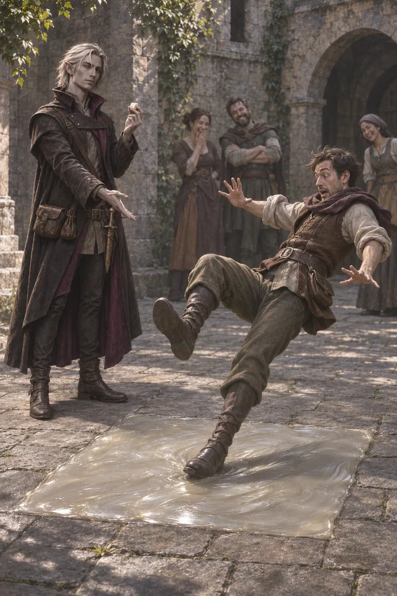
PreparadaGraxa
Grease

Graxa
Grease
Graxa não inflamável cobre um quadrado de 3 m de lado, criando terreno difícil. Quem estiver ali quando a graxa surge, entrar na área ou terminar o turno nela faz uma salvaguarda de Destreza para não cair.
Abrir ilustração completa
Truque conhecidoExplosão Feiticeira
Sorcerous Burst
Explosão Feiticeira
Sorcerous Burst
Ataque à distância que causa 1d8 de dano ácido, elétrico, de fogo, de frio, psíquico, trovejante ou de veneno. Cada 8 permite rolar outro d8, até o limite do modificador de conjuração em dados extras. A arte mostra a variante psíquica.
Abrir ilustração completa
Truque conhecidoEstilhaço Mental
Mind Sliver
Estilhaço Mental
Mind Sliver
Se falhar na salvaguarda de Inteligência, o alvo sofre 1d6 de dano psíquico e subtrai 1d4 da próxima salvaguarda que fizer até o fim do próximo turno do Thyago.
Abrir ilustração completa
 Truque conhecido
Truque conhecidoMão Mágica
Mage Hand
Mão Mágica
Mage Hand
Uma mão espectral flutuante manipula objetos leves, como um pergaminho dentro de uma caixa aberta.
Abrir ilustração completaTruque conhecidoIlusão Menor
Minor Illusion
Ilusão Menor
Minor Illusion
Cria um som ou a imagem de um objeto pequeno. A imagem é silenciosa e intangível.
Abrir ilustração completa
❧ Botânica
Herbário e conhecimentos botânicos registrados.
Registro confirmadoHerbalismo da Mercile
Herbalismo da Mercile
A ficha da Mercile registra proficiência e equipamento de herbalismo.
Registro confirmadoNatureza do Senshi
Natureza do Senshi
A ficha de Senshi registra proficiência em Natureza.
♨ Culinária
Receitas comuns do repertório do Senshi.
Registro confirmadoEnsopado de Cogumelos da Caverna
Ensopado de Cogumelos da Caverna
Receita comum. Usar apenas cogumelos identificados como adequados ao consumo.
Registro confirmadoEspetinhos do Explorador
Espetinhos do Explorador
Receita comum de viagem. O preparo depende dos ingredientes e utensílios disponíveis.
Registro confirmadoCaldo Revigorante do Viajante
Caldo Revigorante do Viajante
Receita comum de acampamento. O nome faz parte da receita. O caldo não concede cura de pontos de vida.
♜ Bestiário
Criaturas encontradas pelo grupo.
Registro confirmadoGoblins Cragmaw
Goblins Cragmaw
O grupo encontrou goblins na trilha e no esconderijo Cragmaw.
Registro confirmadoBugbear
Bugbear
O grupo encontrou e derrotou Klarg, um bugbear, no esconderijo Cragmaw.
Registro confirmadoLobos
Lobos
No esconderijo Cragmaw, o grupo alimentou lobos e os libertou.
♫ Thalyta
Magias de Barda e Bruxa e opções de linhagem.
 Truque conhecido
Truque conhecidoZombaria Viciosa
Zombaria Viciosa
Uma provocação encantada desestabiliza um alvo.
Abrir ilustração completa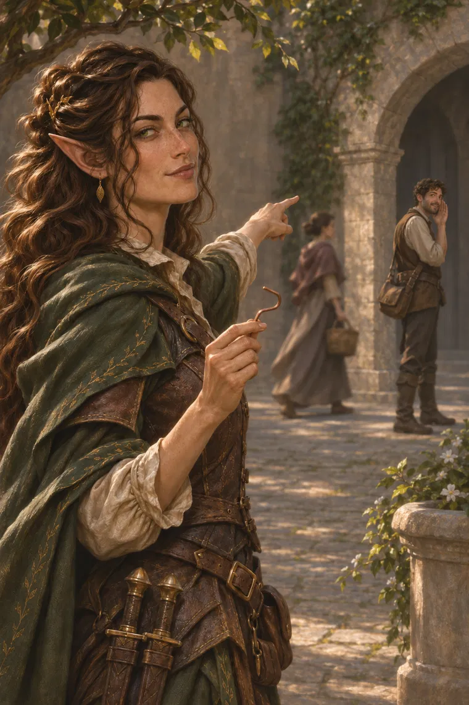
Truque conhecidoMensagem

Mensagem
Thalyta aponta e sussurra. Só a pessoa escolhida ouve e pode responder em segredo.
Abrir ilustração completa
Magia de 1º círculoImagem Silenciosa
Imagem Silenciosa
Uma parede ilusória ocupa parte de um caminho. A imagem é puramente visual.
Abrir ilustração completa
 Magia de 1º círculo
Magia de 1º círculoSussurros Dissonantes
Sussurros Dissonantes
Uma melodia ouvida na mente leva o alvo a recuar por uma passagem livre.
Abrir ilustração completa Magia de 1º círculo
Magia de 1º círculoPalavra Curativa
Palavra Curativa
Uma palavra revigora uma pessoa que Thalyta vê à distância.
Abrir ilustração completaMagia de 1º círculoComando
Comando
Um alvo larga o objeto que segura após receber uma ordem de uma palavra.
Abrir ilustração completa
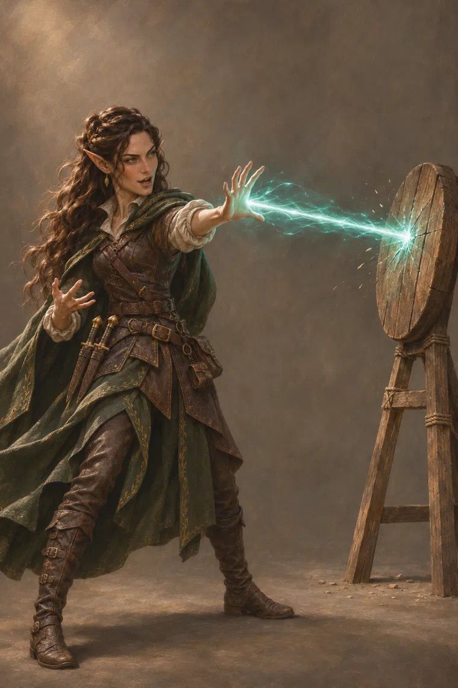
Truque conhecidoRajada Mística

Rajada Mística
Um único feixe de energia crepitante, como no nível atual da personagem.
Abrir ilustração completa
 Truque conhecido
Truque conhecidoEstilhaço Mental
Estilhaço Mental
Uma perturbação psíquica momentânea atinge a mente de um alvo.
Abrir ilustração completa Magia de 1º círculo
Magia de 1º círculoArmadura de Agathys
Armadura de Agathys
Geada mágica protetora envolve Thalyta e seu traje.
Abrir ilustração completa Magia de 1º círculo
Magia de 1º círculoEnfeitiçar Pessoa
Enfeitiçar Pessoa
A atitude de uma pessoa muda de cautelosa para amistosa.
Abrir ilustração completa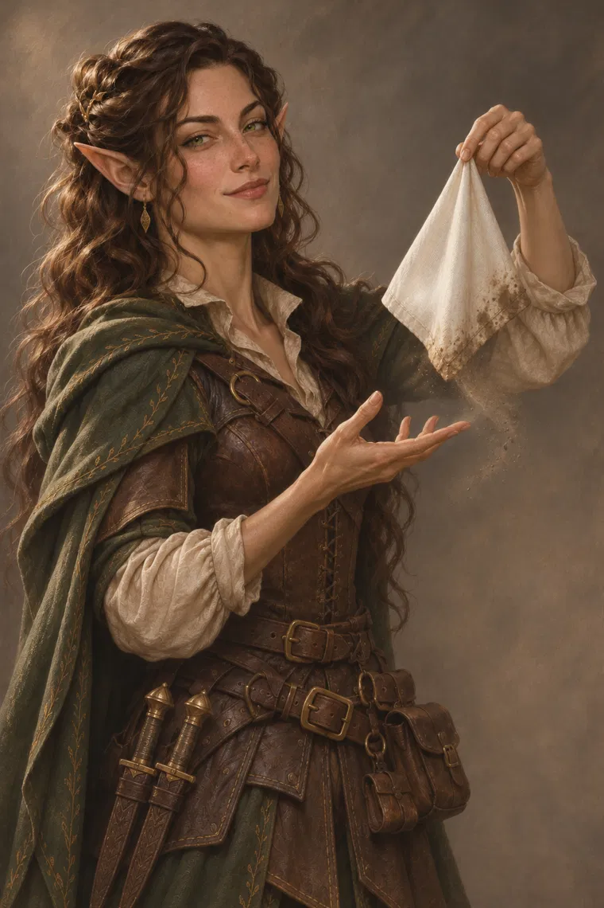
Truque inicial de linhagemPrestidigitação

Prestidigitação
O truque inicial da linhagem limpa um pequeno lenço sujo.
Abrir ilustração completa
 Troca de linhagem planejada
Troca de linhagem planejadaIlusão Menor
Ilusão Menor
Um baú pequeno e imóvel representa a opção visual da troca de truque planejada.
Abrir ilustração completa✚ Mercile
Magias preparadas, opções para preparar e truques.
Preparada · ConcentraçãoBênção
Bênção
Até três alvos recebem 1d4 extra nas jogadas de ataque e nas salvaguardas.
Abrir ilustração completa Preparada
PreparadaCurar Ferimentos
Curar Ferimentos
Ao tocar uma criatura, restaura 2d8 + modificador de Sabedoria pontos de vida.
Abrir ilustração completa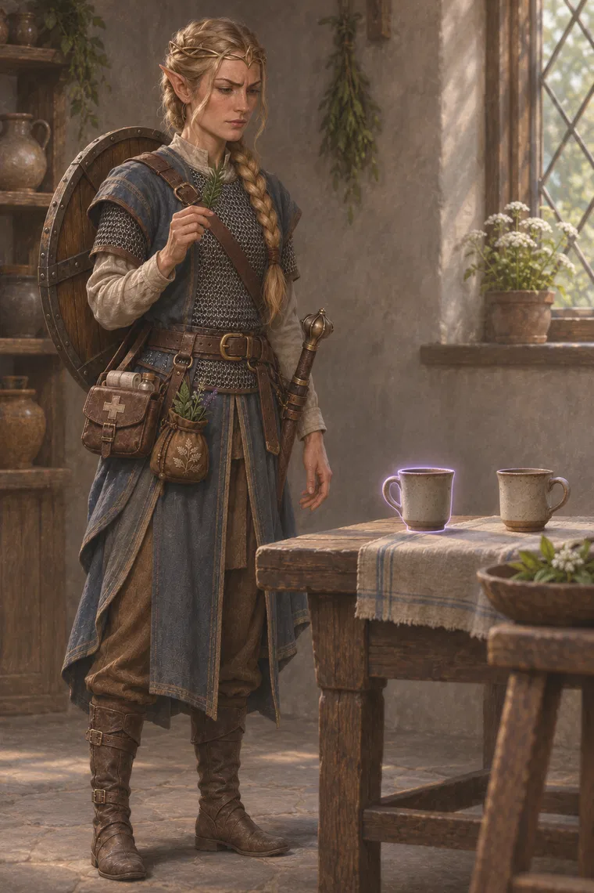
Preparada · Concentração · RitualDetectar Venenos e Doenças

Detectar Venenos e Doenças
Percebe venenos, criaturas venenosas ou peçonhentas e contágios mágicos num raio de 9 m.
Abrir ilustração completa
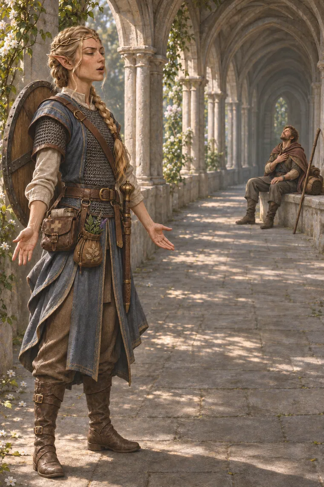
Preparada · Ação bônusPalavra Curativa

Palavra Curativa
Restaura 2d4 + modificador de Sabedoria pontos de vida de uma criatura que a clériga vê a até 18 m.
Abrir ilustração completa
 Preparada · Ação bônus
Preparada · Ação bônusSantuário
Santuário
Quem tenta atingir a criatura protegida com um ataque ou magia de dano faz uma salvaguarda de Sabedoria. Em caso de falha, muda de alvo ou perde a tentativa.
Abrir ilustração completa Disponível para preparar · Concentração
Disponível para preparar · ConcentraçãoPerdição
Perdição
Até três criaturas fazem uma salvaguarda de Carisma. Quem falha subtrai 1d4 de ataques e salvaguardas enquanto durar o efeito.
Abrir ilustração completa Disponível para preparar
Disponível para prepararComando
Comando
Uma ordem de uma palavra é cumprida no próximo turno se o alvo falhar na salvaguarda de Sabedoria.
Abrir ilustração completa Disponível para preparar
Disponível para prepararCriar ou Destruir Água
Criar ou Destruir Água
Cria água limpa num recipiente aberto ou como chuva. Também pode remover água de um recipiente aberto ou dissipar neblina.
Abrir ilustração completa Disponível para preparar · Concentração
Disponível para preparar · ConcentraçãoDetectar Bem e Mal
Detectar Bem e Mal
Localiza certos tipos sobrenaturais, como fadas e mortos-vivos, e áreas sob efeito de Consagrar em até 9 m.
Abrir ilustração completa Disponível para preparar · Concentração · Ritual
Disponível para preparar · Concentração · RitualDetectar Magia
Detectar Magia
Percebe efeitos mágicos em até 9 m. Uma ação de Magia permite ver uma aura fraca nos alvos visíveis e identificar a escola de uma magia.
Abrir ilustração completa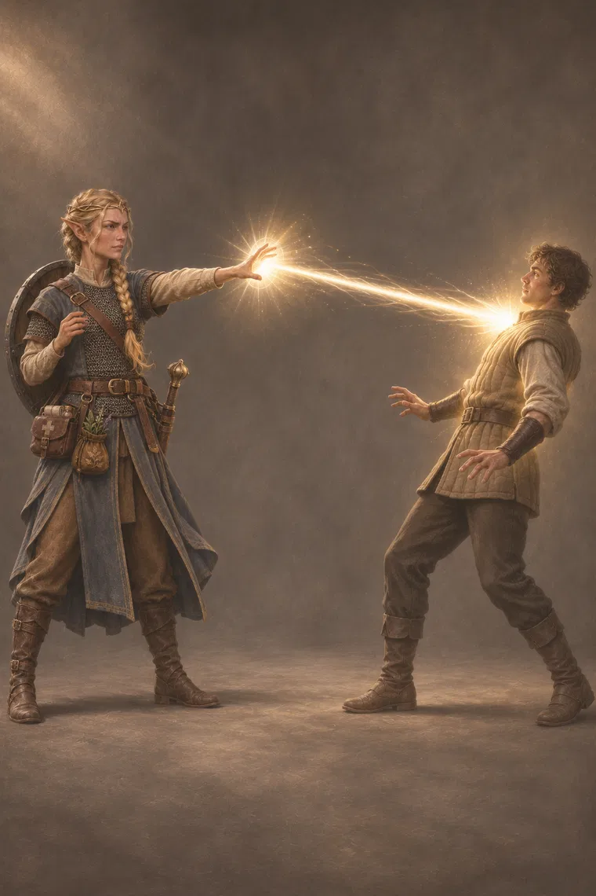
Disponível para prepararRaio Guiador

Raio Guiador
Um raio radiante causa 4d6 de dano ao acertar e dá vantagem à próxima jogada de ataque contra o alvo dentro da duração.
Abrir ilustração completa
 Disponível para preparar
Disponível para prepararInfligir Ferimentos
Infligir Ferimentos
Uma criatura tocada faz uma salvaguarda de Constituição contra 2d10 de dano necrótico, com metade em caso de sucesso.
Abrir ilustração completa Disponível para preparar · Concentração
Disponível para preparar · ConcentraçãoProteção Contra o Bem e o Mal
Proteção Contra o Bem e o Mal
Protege por toque uma criatura disposta contra ataques e certos efeitos de tipos sobrenaturais. Consome água benta no valor de pelo menos 25 PO.
Abrir ilustração completa Disponível para preparar · Ritual
Disponível para preparar · RitualPurificar Alimentos e Bebidas
Purificar Alimentos e Bebidas
Remove veneno e deterioração de alimentos e bebidas não mágicos na área.
Abrir ilustração completa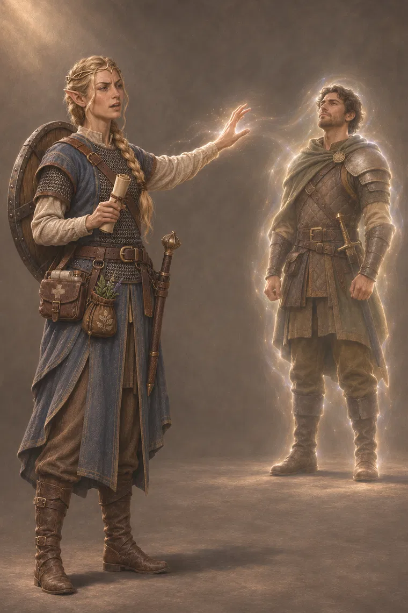
Disponível para preparar · Concentração · Ação bônusEscudo da Fé

Escudo da Fé
Um campo cintilante envolve uma criatura e aumenta sua Classe de Armadura em 2 enquanto durar o efeito.
Abrir ilustração completa
 Truque conhecido · Concentração
Truque conhecido · ConcentraçãoOrientação
Orientação
A clériga toca uma criatura disposta e escolhe uma perícia. Durante o efeito, a criatura soma 1d4 aos testes dessa perícia.
Abrir ilustração completa Truque conhecido
Truque conhecidoChama Sagrada
Chama Sagrada
Uma luminosidade em forma de chama desce sobre um alvo. Causa 1d8 de dano radiante se ele falhar na salvaguarda de Destreza.
Abrir ilustração completa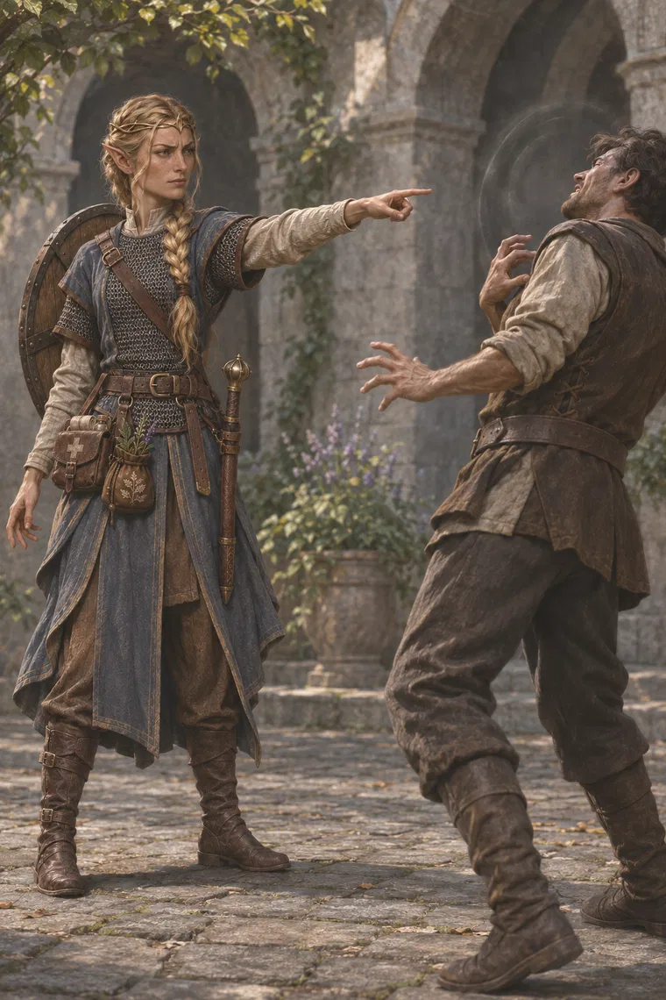
Truque conhecidoSino dos Mortos

Sino dos Mortos
Uma badalada soa perto do alvo. Se falhar na salvaguarda de Sabedoria, ele sofre 1d8 de dano necrótico ou 1d12 se já tiver perdido pontos de vida.
Abrir ilustração completa
 Truque conhecido
Truque conhecidoTaumaturgia
Taumaturgia
Provoca um efeito menor, como abrir de súbito uma janela destrancada.
Abrir ilustração completa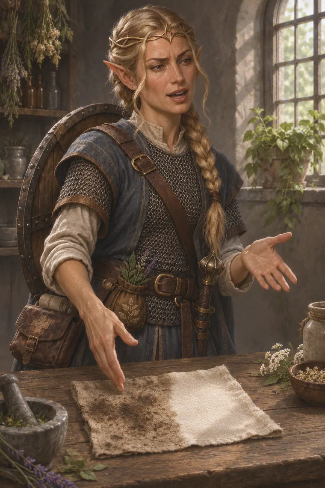
Truque conhecido · Linhagem Alta ElfaPrestidigitação

Prestidigitação
Faz um pequeno truque, como limpar um lenço, acender uma vela ou produzir um breve efeito sensorial.
Abrir ilustração completa
⚗ Alquimia
Equipamento confirmado na ficha.
Registro confirmadoKit de Curandeiro
Kit de Curandeiro
Consta na ficha da Mercile como equipamento para atendimento.
Registro confirmadoKit de Herbalismo
Kit de Herbalismo
Consta na ficha da Mercile como ferramenta de trabalho com ervas.
◆ Laios
Magias de Paladino e Bruxo e truques conhecidos.
Preparada · Paladino · 1º círculo · ConcentraçãoBênção
Bless
Bênção
Bless
Até três criaturas somam 1d4 às jogadas de ataque e às salvaguardas enquanto a bênção durar.
Abrir ilustração completa
Preparada · Paladino · 1º círculoCurar Ferimentos
Cure Wounds
Curar Ferimentos
Cure Wounds
Uma criatura tocada recupera 2d8 + o modificador de Carisma em pontos de vida.
Abrir ilustração completa
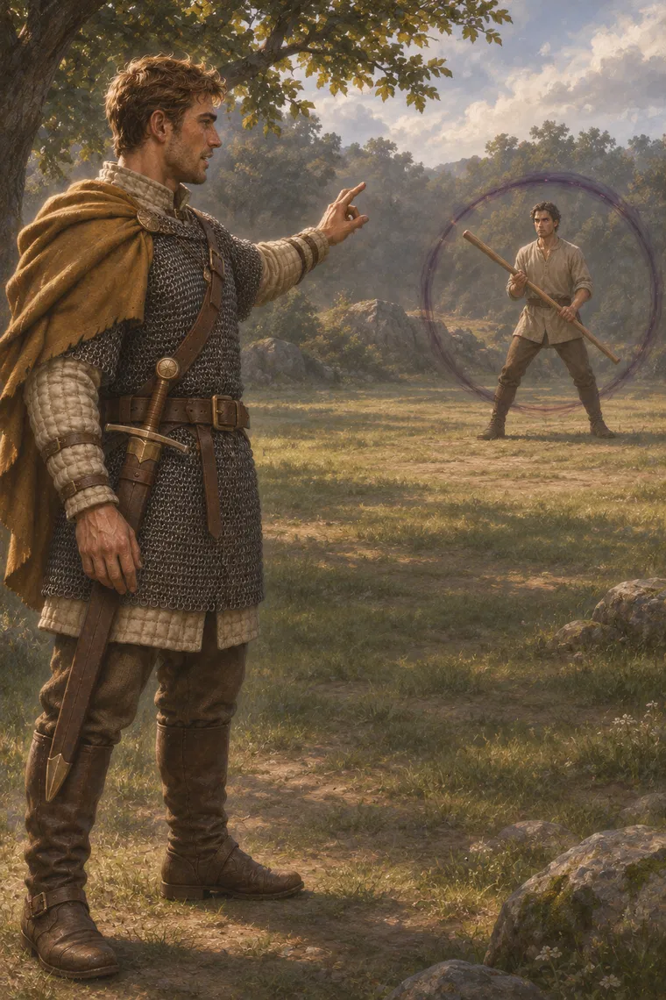
Preparada · Bruxo · 1º círculo · Ação bônus · ConcentraçãoMaldição
Hex

Maldição
Hex
Amaldiçoa uma criatura. Os ataques de Laios que a acertam causam 1d6 extra de dano necrótico. O alvo também tem desvantagem nos testes de atributo que usam o atributo escolhido.
Abrir ilustração completa
Preparada · Bruxo · 1º círculo · Ação bônusArmadura de Agathys
Armor of Agathys
Armadura de Agathys
Armor of Agathys
Geada protetora concede 5 pontos de vida temporários. Quem acerta Laios com um ataque corpo a corpo sofre 5 de dano de frio enquanto a magia durar. Ela termina se ele ficar sem pontos de vida temporários.
Abrir ilustração completa
 Truque conhecido · Bruxo
Truque conhecido · BruxoRajada Mística
Eldritch Blast
Rajada Mística
Eldritch Blast
Dispara um feixe de energia crepitante que causa 1d10 de dano de força se acertar.
Abrir ilustração completa Truque conhecido · Bruxo · Tasha
Truque conhecido · Bruxo · TashaLâmina Trovejante
Booming Blade
Lâmina Trovejante
Booming Blade
Faz um ataque com uma arma corpo a corpo que vale pelo menos 1 PP. Se acertar, o alvo sofre o dano normal da arma. Se o alvo se mover voluntariamente pelo menos 1,5 m antes do início do próximo turno de Laios, sofre mais 1d8 de dano trovejante.
Abrir ilustração completa